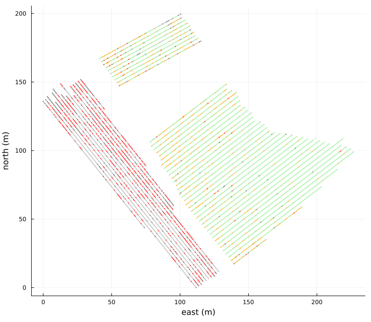

Fitting flavescence dorée in a vineyard
Simon Frost
- Overview
- The maps
- The model and its likelihood
- Fitting
- Kernels
- Does the fit reproduce the maps?
- Summary
- Deviations from the source
- References
Overview
Flavescence dorée is a quarantine disease of grapevine, caused by a phytoplasma carried from vine to vine by the leafhopper Scaphoideus titanus. Infected vines show symptoms the year after infection and are uprooted (rogued) the following winter. Adrakey et al. (2023) mapped every vine of three plots at Faleyras, near Bordeaux, in 2018 and 2019, and fitted a yearly spatial epidemic model by Markov chain Monte Carlo with data augmentation, comparing dispersal kernels and ways of modelling infection from outside the plots. This vignette fits the zoo’s flavescence_doree, an adaptation of their model, to the same maps with CellularAutomataInference.
The main difference from the source is primary infection. The source’s best model scales infection from outside the plots by the number of symptomatic vines within 300 m the year before, counted by a regional surveillance programme whose data were not released; here it is a constant rate.
ENV["GKSwstype"] = "100"
using EcologicalCellularAutomata
using CellularAutomataCore
using CellularAutomataInference
using Distributions
using Plots
using Random
using StatisticsThe maps
v = fd_vines()
colours = Dict(:symptomatic_2018 => :red, :symptomatic_2019 => :orange,
:absent_2018 => :gray40, :absent_2019 => :gray70, :healthy => :lightgreen)
scatter(v.x, v.y; color=[colours[s] for s in v.status], markersize=1.2,
markerstrokewidth=0, aspect_ratio=1, legend=false, xlabel="east (m)",
ylabel="north (m)", size=(750, 650))
Figure 1: The three plots (left, the Cabernet Sauvignon plot CS; right, the Merlot plots M1 and M2): vines symptomatic in 2018 (red) and 2019 (orange), absent by 2018 or 2019 (grey), and healthy (light green).
for s in (:absent_2018, :symptomatic_2018, :absent_2019, :symptomatic_2019, :healthy)
println(rpad(s, 18), count(==(s), v.status))
endabsent_2018 411
symptomatic_2018 713
absent_2019 1298
symptomatic_2019 638
healthy 2996The model and its likelihood
Each yearly step is a season. A healthy vine is removed for other reasons with probability $q$; otherwise it is infected with probability $1 - \exp\{-(\varepsilon + \beta \sum_j c_j K(r_{ij}; \alpha)/\alpha^2)\}$, summing over the vines symptomatic that season, within a cut-off radius. An infected vine is symptomatic the next season, infecting others, and is rogued the winter after. The survey fixes almost every vine’s history: a vine symptomatic in 2018 or 2019 was infected two seasons before; a Merlot vine absent in 2019 was removed for another reason; the Cabernet Sauvignon plot was uprooted after the 2018 survey; and a vine healthy in 2019 may or may not have been infected in 2018, which is summed over. Only the 411 vines absent in 2018 are unknown: each was either rogued after showing symptoms in 2015, 2016 or 2017, or removed for another reason in some year before 2018. fd_survey_fit builds these histories, fd_loglik gives their exact probability (equal to the core’s path_logpdf on complete histories, as the package’s tests check), and fd_latent_step! updates the unknown ones.
Fitting
The priors follow the source’s code: exponential, with means 0.012 for $\varepsilon$, 10 for $\beta$ and 100 m for $\alpha$, and uniform for $q$. Four chains of the power-law kernel $(1 + r/\alpha)^{-6}$ (the source’s preferred shape) with a cut-off of 120 m:
priors = (ε=Exponential(0.012), β=Exponential(10), q=Uniform(0, 1), α=Exponential(100))
θ0 = (ε=0.005, β=20.0, q=0.003, α=30.0)
function fit_kernel(kernel, radius, iterations)
prob = problem_flavescence_doree(; kernel, radius)
fit, z0 = fd_survey_fit(prob)
model = AugmentedModel((θ, z) -> fd_loglik(θ, z, fit),
(rng, z, θ) -> fd_latent_step!(rng, z, θ, fit), priors, z0)
chains = sample(Xoshiro(4), model, DataAugmentation(; parameter_steps=3, init_scale=0.05),
MCMCThreads(), iterations, 4; progress=false, initial_params=fill(θ0, 4),
discard_initial=2_000)
return (; prob, fit, chains, summary=posterior_summary(chains))
end
main = fit_kernel(:power6, 120.0, 6_000)
r3(x) = round(x; sigdigits=3)
for k in keys(main.summary)
q = main.summary[k].q
println(rpad(k, 3), r3(q[2]), " [", r3(q[1]), ", ", r3(q[3]), "] R-hat ",
round(main.summary[k].rhat; digits=3), " ESS ", round(Int, main.summary[k].ess))
endε 0.00381 [0.00255, 0.00535] R-hat 1.001 ESS 3628
β 50.5 [45.9, 55.9] R-hat 1.001 ESS 4391
q 0.00322 [0.00249, 0.00402] R-hat 1.002 ESS 2728
α 117.0 [103.0, 133.0] R-hat 1.0 ESS 5271The removal rate $q$, about 0.003 a year, is close to the source’s 0.004-0.005. The kernel’s scale is not: $\alpha$ is about 120 m, so within the plots the kernel barely falls, and infection spreads on the scale of the plots, where the source found a mean distance of 13 m to the first infection.
Kernels
alts = [(:exponential, fit_kernel(:exponential, 60.0, 4_000)),
(:gaussian, fit_kernel(:gaussian, 60.0, 4_000))]
for (name, f) in alts
s = f.summary
println(rpad(name, 12), "α ", r3(s.α.q[2]), " m [", r3(s.α.q[1]), ", ", r3(s.α.q[3]),
"], ε ", r3(s.ε.q[2]), ", β ", r3(s.β.q[2]), ", q ", r3(s.q.q[2]))
endexponential α 39.7 m [29.3, 61.1], ε 0.00859, β 3.92, q 0.00295
gaussian α 73.1 m [55.1, 128.0], ε 0.00904, β 7.42, q 0.00298Every shape is broad. With the source’s regional term absent, infections far from the 2018 sources (the far side of the Merlot plots) can only come from a long kernel or a high background rate, and the fit uses both.
Does the fit reproduce the maps?
Simulations from 100 draws of the main fit’s posterior, from 2013, compared with the survey: the number of vines symptomatic in each plot in 2018 and 2019, and how far each vine newly symptomatic in 2019 lies from the nearest vine symptomatic in 2018.
draws = reduce(vcat, [c.values for c in main.chains])
idx = round.(Int, range(1, size(draws, 1); length=100))
plots = ["CS", "M1", "M2"]
obs_counts = [count(i -> v.plot[i] == pl && v.status[i] === s, eachindex(v.x))
for pl in plots, s in (:symptomatic_2018, :symptomatic_2019)]
xy = hcat(v.x, v.y)
function nearest_distance(new, old)
isempty(old) && return NaN
return median(minimum(hypot(xy[i, 1] - xy[j, 1], xy[i, 2] - xy[j, 2]) for j in old)
for i in new)
end
obs_near = nearest_distance(findall(==(:symptomatic_2019), v.status),
findall(==(:symptomatic_2018), v.status))
sim_counts = zeros(Int, 3, 2, length(idx))
sim_near = Float64[]
for (k, i) in enumerate(idx)
θ = (ε=draws[i, 1], β=draws[i, 2], q=draws[i, 3], α=draws[i, 4])
pr = problem_flavescence_doree(; kernel=:power6, radius=120.0, α=θ.α,
seed=500 + k, pmap=(ε=θ.ε, β=θ.β, q=θ.q))
sol = solve(pr; saveat=[5, 6], save_start=false)
s18 = fd_symptomatic(sol.u[1], pr.p.cells)
s19 = fd_symptomatic(sol.u[2], pr.p.cells) .& (v.plot .!= "CS")
for (a, pl) in enumerate(plots)
sim_counts[a, 1, k] = count(s18 .& (v.plot .== pl))
sim_counts[a, 2, k] = count(s19 .& (v.plot .== pl))
end
push!(sim_near, nearest_distance(findall(s19), findall(s18)))
end
println("plot year survey simulated median [90%]")
for (a, pl) in enumerate(plots), (b, y) in enumerate((2018, 2019))
sims = sim_counts[a, b, :]
println(rpad(pl, 6), y, lpad(obs_counts[a, b], 8), " ", median(sims), " [",
quantile(sims, 0.05), ", ", quantile(sims, 0.95), "]")
end
println("median distance from a 2019 case to the nearest 2018 case: survey ",
round(obs_near; digits=1), " m, simulated ",
round(median(filter(isfinite, sim_near)); digits=1), " m [",
round(quantile(filter(isfinite, sim_near), 0.05); digits=1), ", ",
round(quantile(filter(isfinite, sim_near), 0.95); digits=1), "]")plot year survey simulated median [90%]
CS 2018 665 142.5 [100.65, 218.05]
CS 2019 0 0.0 [0.0, 0.0]
M1 2018 24 21.5 [12.0, 38.0]
M1 2019 178 40.0 [27.0, 59.099999999999994]
M2 2018 24 218.5 [144.8, 329.15]
M2 2019 460 430.0 [297.0, 571.6999999999999]
median distance from a 2019 case to the nearest 2018 case: survey 6.9 m, simulated 3.2 m [3.1, 3.8]The fit does not reproduce the maps. Simulated from 2013 with every vine equally susceptible and a constant background rate, the epidemic spreads evenly: far too few vines are symptomatic in the Cabernet Sauvignon plot in 2018 (the survey found 665, 29% of the plot), too many in M2, too few in M1 in 2019, and new cases lie closer to old ones than in the survey. The data augmentation fits the histories given the maps, but the model cannot generate a plot as heavily infected as CS next to plots as lightly infected as the Merlot ones. Differences in susceptibility or exposure between plots and cultivars (the source includes a cultivar effect on infectivity, and found most of the 2019 Merlot cases near the infected CS plot), the epidemic’s start in CS, and the regional primary infection are what is missing.
Summary
| Question | Answer here |
|---|---|
| Removal for other reasons | about 0.003 a year, close to the source’s 0.004-0.005 |
| The dispersal kernel | broad for every shape (scale near 120 m for the power law), where the source found 13 m |
| Why the difference | primary infection is constant here; the source’s best model scales it by regional counts that were not released, which absorbs the distant infections |
| Counts and spatial pattern | not reproduced: too few cases in the Cabernet Sauvignon plot in 2018, too many in M2, and new cases too close to old ones |
Deviations from the source
foreach(d -> println("- ", d), model_info(:flavescence_doree).deviations)- Primary infection is constant (epsilon a year): the source's variable form scales it by the symptomatic plants within 300 m the year before, from a regulatory database that was not released.
- Vines stand on a raster (0.5 m by default) padded by an empty margin of the kernel's radius on a periodic grid, and the kernel is cut at that radius (60 m by default); the sum over sources is a kernel field computed by FFT, multiplied by the normalising constant Z to undo the core's normalisation.
- Every symptomatic vine is rogued the winter after it shows symptoms, in every year, though the source's plots F2 and F3 were not inspected from 2015 to 2017.
- Removal for other reasons and infection compete within a year: a healthy vine is removed with probability q and otherwise exposed to infection.References
Adrakey, Hola K., Gavin J. Gibson, Sandrine Eveillard, Sylvie Malembic-Maher, and Frederic Fabre. 2023. “Bayesian Inference for Spatio-Temporal Stochastic Transmission of Plant Disease in the Presence of Roguing: A Case Study to Characterise the Dispersal of Flavescence Dorée.” PLOS Computational Biology 19 (9): e1011399. https://doi.org/10.1371/journal.pcbi.1011399.